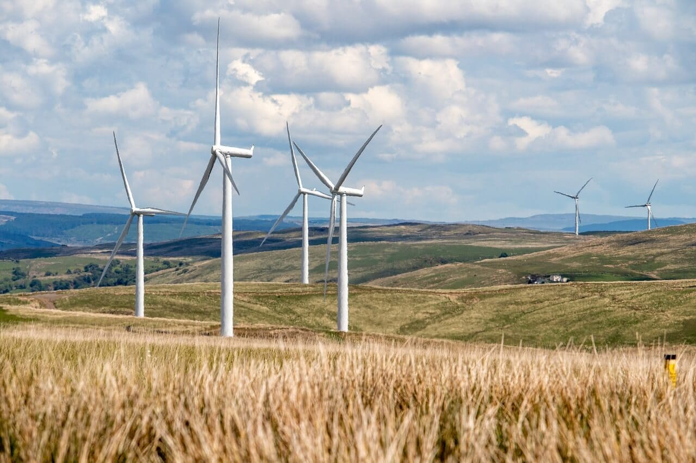

A busca por fontes de energia limpa e renovável tem se tornado cada vez mais urgente diante dos desafios ambientais que enfrentamos atualmente, neste artigo, exploraremos as ações e tecnologias que transformam o mundo, impulsionando a adoção de energias renováveis como solução para a crise climática, descubra como essas formas de energia estão revolucionando a maneira como produzimos e consumimos eletricidade, além de promover o desenvolvimento sustentável em todo o planeta.
As energias renováveis desempenham um papel fundamental na transição para um futuro mais sustentável, ao contrário dos combustíveis fósseis, como carvão, petróleo e gás natural, as energias renováveis são obtidas de fontes naturais e inesgotáveis, como sol, vento, água e biomassa, essas fontes limpas não emitem gases de efeito estufa e têm um impacto mínimo no meio ambiente.
Ao adotar energias renováveis, reduzimos nossa dependência de fontes não renováveis e contribuímos para a diminuição das emissões de carbono, principal causador do aquecimento global, além disso, a diversificação da matriz energética torna os sistemas elétricos mais resilientes e menos vulneráveis a flutuações nos preços dos combustíveis fósseis.
A energia solar é uma das formas mais promissoras de energia renovável, através da captura da luz solar por meio de painéis fotovoltaicos, é possível gerar eletricidade de forma limpa e sustentável, a energia solar possui um potencial ilimitado, uma vez que o sol é uma fonte de energia abundante e disponível em todo o planeta.
Com avanços tecnológicos e redução de custos, a energia solar tem se tornado cada vez mais acessível, grandes usinas solares estão sendo construídas em diferentes partes do mundo, aproveitando a energia do sol para alimentar cidades inteiras, além disso, sistemas de geração distribuída permitem que residências e empresas instalem painéis solares em seus telhados, produzindo sua própria eletricidade.
A energia eólica é outra forma importante de energia renovável, através da captação do vento por meio de aerogeradores, é possível transformar a energia cinética do vento em eletricidade, a energia eólica é limpa, renovável e possui um potencial significativo para suprir as necessidades energéticas globais.
Parques eólicos têm se expandido em todo o mundo, especialmente em regiões com ventos consistentes, essas grandes turbinas eólicas geram eletricidade em escala comercial, fornecendo energia para as redes elétricas locais, além disso, a energia eólica offshore, que se baseia em turbinas instaladas no mar, tem se mostrado uma alternativa promissora, aproveitando os ventos fortes e constantes em alto mar.
A energia hidrelétrica é uma das formas mais antigas de energia renovável, através da construção de barragens em rios, é possível aproveitar o fluxo da água para gerar eletricidade de maneira sustentável, as usinas hidrelétricas podem variar em tamanho, desde pequenas instalações em rios locais até grandes projetos de barragem em escala de megawatts.
A energia hidrelétrica oferece uma série de benefícios, incluindo a capacidade de armazenar energia, permitindo que seja liberada quando a demanda é alta, no entanto, a construção de barragens pode ter impactos ambientais significativos, como a alteração do ecossistema fluvial e o deslocamento de comunidades locais, por isso, é essencial considerar cuidadosamente os impactos socioambientais ao desenvolver projetos hidrelétricos.
A bioenergia é uma forma de energia renovável obtida a partir de biomassa, que inclui materiais orgânicos como resíduos agrícolas, resíduos florestais, culturas energéticas e resíduos de alimentos, essa biomassa pode ser convertida em biogás, biocombustíveis ou usada diretamente para geração de calor e eletricidade.
A bioenergia desempenha um papel importante na redução do uso de combustíveis fósseis, especialmente nos setores de transporte e aquecimento, além disso, a utilização de resíduos agrícolas e florestais como fonte de energia contribui para a gestão sustentável de resíduos e redução das emissões de metano provenientes da decomposição desses materiais.
À medida que enfrentamos os desafios impostos pelas mudanças climáticas, as energias renováveis se tornam uma parte essencial da solução, a transição para um sistema energético mais limpo e sustentável requer a adoção de ações que transformam o mundo, a energia solar, eólica, hidrelétrica e bioenergia estão liderando essa transformação, impulsionando a inovação tecnológica, a criação de empregos verdes e a redução das emissões de carbono.
À medida que avançamos em direção a um futuro mais sustentável, é crucial que governos, empresas e indivíduos se comprometam com a transição para as energias renováveis, investimentos em pesquisa e desenvolvimento, políticas de incentivo e conscientização pública são fundamentais para acelerar a implementação de soluções renováveis em todo o mundo, somente assim poderemos garantir um futuro mais limpo, seguro e próspero para as gerações presentes e futuras.